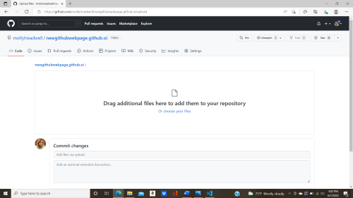

How To Create Your Own Webpage Using Github
- First, set up your new Github account by typing in your email address and establishing a username and password.
- Next, click the
"Create a new repository"
button
- You will then establish a name for your repo: use something relavant to your website followed by .github.io. One example could be
"mollyswebsite.github.io"
- You will be directed to a page where you can create a new file or upload an existing one. Click the link
"uploading an existing file"
- Here you can drag your files into the box as in indicated.

- After you have added your files, click
"Commit changes"
at the bottom of the page.
- Nice work! You have published your own webpage!